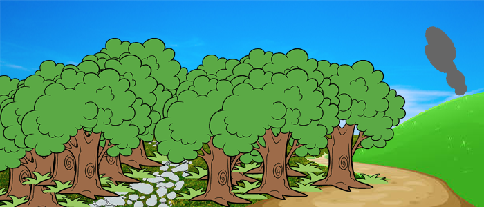

You pick up the sword and you decide to try and find your kingdom. Which way would you like to go?
You look to your left and see a pathway going through the forest
Walk along the path
or
You look to your right and see a stream of smoke coming over the mountain
Walk towards the smoke